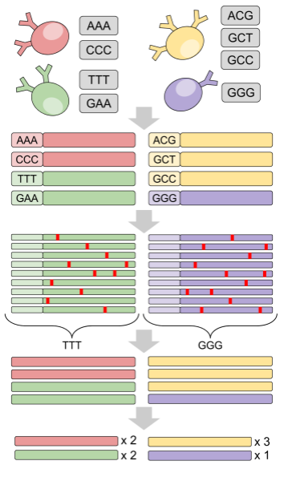
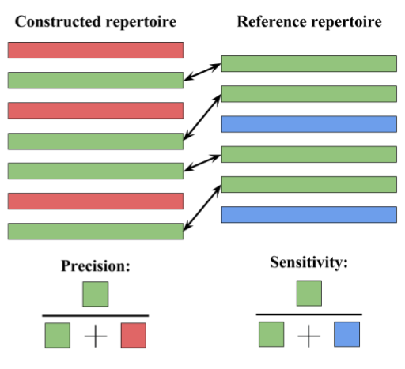
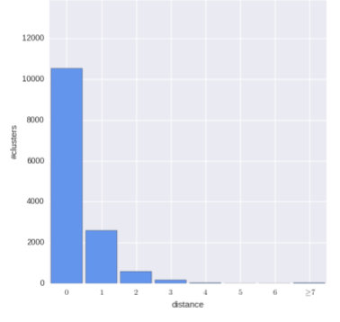
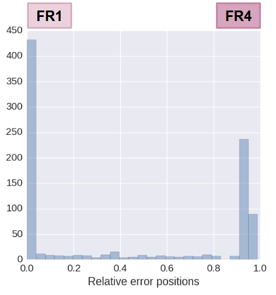
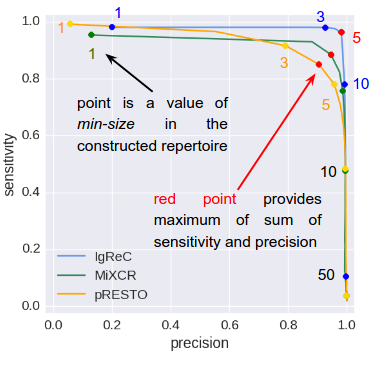
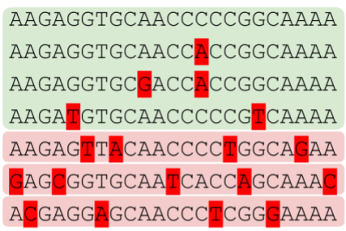
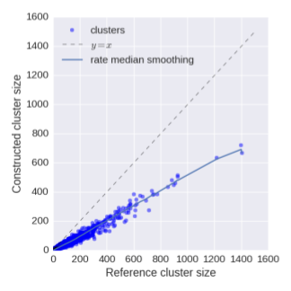
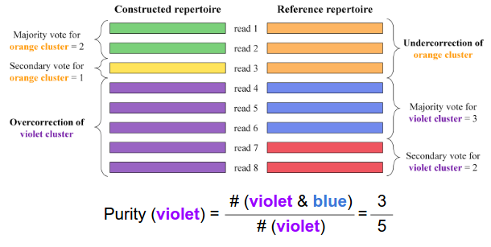
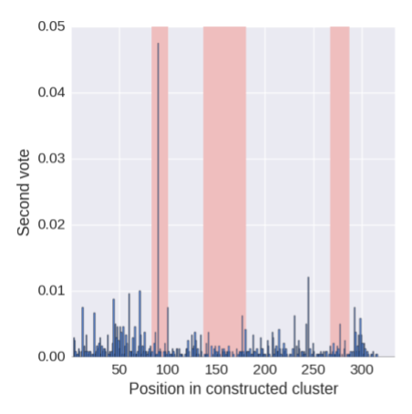

Motivation and purposes
Construction of antibody repertoire is a preliminary step of any immunological analysis based on Rep-seq reads. However, for this moment there is no any gold standard solution for this problem. Each repertoire construction strategy has its own advantages and disadvantages. In order to benchmark all proposed repertoire construction approaches, we developed IgQUAST (ImmunoGlobulin QUality ASsesstment Tool), a tool for benchmarking of full-length adaptive immune repertoire construction tools and quality assessment of adaptive immune repertoires.
General purposes
- Reference-based and reference-free repertoire quality assestment
- Overcorrection/undercorrection detection
- Analysis of antibody abundancies
- Detection of repertoire construction errors positions
Quality assessment scenarios
IgQUAST takes as an input the constructed repertoire in CLUSTER.FASTA format.
For comprehensive analysis it also requires additional information: the initial read library and reference repertoire. Without reference repertoire IgQUAST cannot perform reference-based analysis. The more information you provide, the more detailed results you will get. See the manual for all possible input options.
As an output IgQUAST reports a bunch of plots (see below for description and explanation of the most important of them) along with numerical statistics. All stats are reported as machine-readable JSON format in order to simplify automatic analysis.
See input requirements in IgQUAST manual. Please note, IgQUAST is designed for repertoire construction problem only! It supposes that input reads are already merged, filtered and cropped and it cannot test the corresponding stages.
TODO Add table with different scenariosReference repertoire
We have two options here: simulated repertoire or construct repertoire using barcoded data and run repertoire construction in the blind (regardless of barcodes) mode. Shrink this section, add references. For reference-based benchmarking an imunosequencing library with known reference repertoire should be used. We suppose using of one of the following reference sources:
Molecular barcoding
Molecular identifiers (UMIs) or barcodes can be used for B-cell labeling. Such labeling allows one to reconstruct immunoglobulin sequences and, thus, provides one with a reference dataset for benchmarking.
Please note that currently available barcoding techniques are not perfect. Remember about barcode collision, barcode corruption, chimeric reads, etc. Thus, using naive barcode demultiplexing approach may lead to imprecise reference and biased analysis.
The better option is to use an approach specially designed for barcode-assisted antibody repertoire construction. We strongly suggest to use our tool BarIgReC for this task.
The second option is consider specially designed semi-artificial test datasets. Such datasets could be obtained by aggressive input read and barcode filtering, when every suspicious barcode and every suspicious read is omitted. Such approach is definitely improper for real-life repertoire construction (since it loses a big part of repertoire diversity, i.e., it is biased), but it is good for test dataset preparation.
|  |
Simulation
Simulated Rep-seq library also can be used as a reference. Actually, there are no special requirements for simulator or/and simulated repertoire, but we suggest to use our simulator: IgSimulator, a versatile immunosequencing simulator, that was specially designed for Ig repertoire construction benchmarking.
Reference-based metrics
Sensitivity and precision
IgQUAST computes clusters in the reference repertoire that were ideally recovered in the constructed repertoire. As integral measures of quality IgQUAST reports two following metrics:- Precision The larger precision, the less number of false constructed clusters
- Sensitivity The larger sensitivity, the more correct clusters were reconstructed
|  |
Detection of repertoire construction errors positions
IgQUAST also performs fuzzy repertoire-to-repertoire matching. It allows to detect “almost correct” clusters.|  |  |
Finding optimal min-size threshold
Distribution of cluster sizes is highly uneven! Thus, most clusters in a repertoire have small size. At the same time, consensus computed by a small cluster is unreliable We cannot construct consensus by two reads in non-trivial case Due to dependency of amplification errors larger cluster may be unreliable too- In case of real analysis we should exclude small clusters from the constructed repertoire to improve precision. Constructed min-size threshold is a parameter of the repertoire construction procedure
- For benchmarking we should not take small clusters into account during sensitivity/precision computation to make the metrics stable. Reference min-size threshold is a parameter of the benchmarking procedure
- IgQUAST computes sensitivity and precision for various constructed min-size values and for fixed reference min-size = 5
|  |
Cluster abundances estimation
Clusters are also characterized by their abundances. IgQUAST analyzes abundances. Use red for overcorrected clusters Error correction does not fix ALL errors => cluster sizes are underestimated (TODO more details. copied from slides)|  |  |
Cluster purity metrics
|  |
Reference-free metrics
Reference-free detection of over/undercorrected clusters
To detect overcorrection construct consensus and count errors by position To fix overcorrection split cluster by position with maximum # errors|  |

|
Feedback and bug reports
Your comments, bug reports, and suggestions are very welcome. They will help us to further improve IgQUAST.If you have any trouble running IgQUAST, please send us the log file from the output directory.
Address for communications: igtools_support@googlegroups.com.
Manual and citations
- IgQUAST manual
Citation: Alexander Shlemov, Sergey Bankevich, Andrey Bzikadze, Dmitriy Chudakov, Yana Safonova, and Pavel A. Pevzner. Reconstructing antibody repertoires from error-prone immunosequencing datasets (submitted)